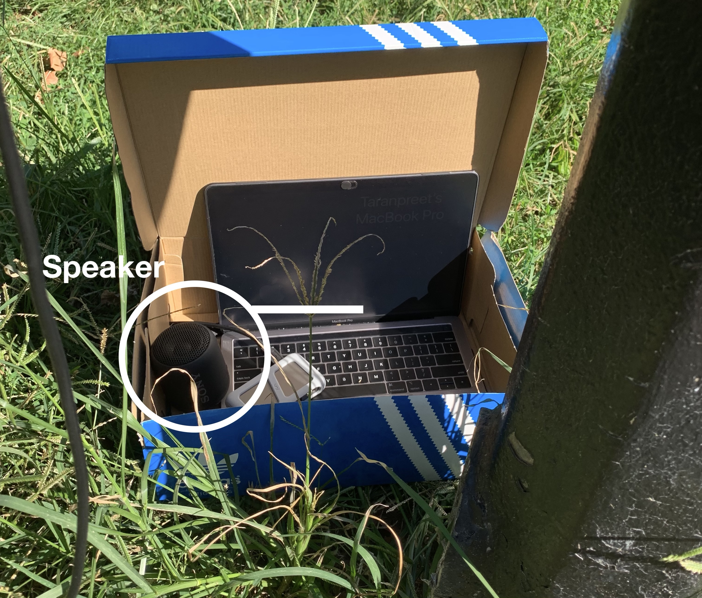
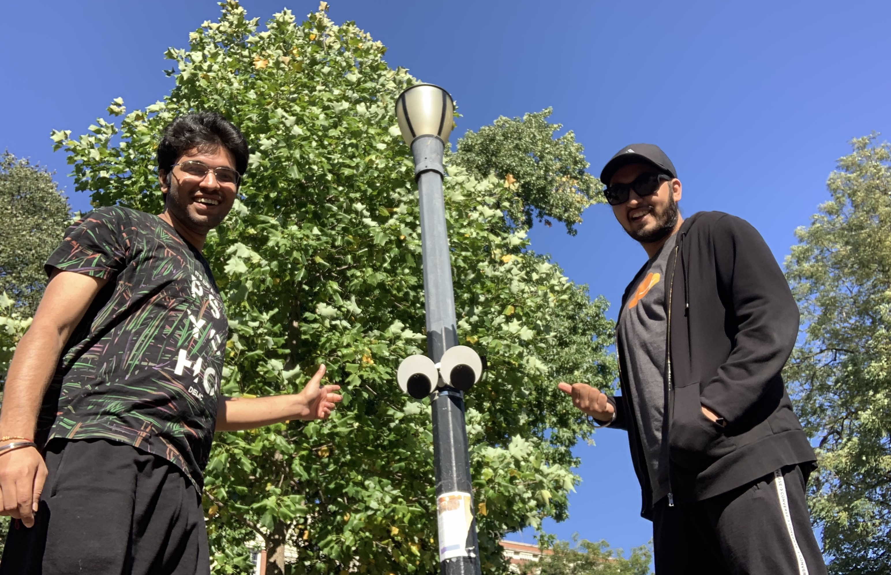

RECAP:
So, After finalising the idea, we did our Prototyping-I. In which we use ipad to run the concept i.e. googly eyes following you as you pass through that lamp post. After getting some interactions from kids there, we made this as a product that can be installed at the location and we can record the interactions. We installed the product but faced some problems which we overcame in Prototyping-II.
Changes done:
1. Better Algorithm
We worked on our previous algorithm and made it better to detect everyone that comes in the frame so that, we can have better results and more interactions.
2. Sound
Also, we installed a speaker with our product to get more interactions. When someone passes through and it detects someone it generates/make a random sound from the list of sounds we provided. (We provided "Mario Game" sounds to this project)
3. New Location
We change our location from previous lamp post to another one which is near the kids-play area and to one of the most entrance used.So, now we can the interactions of the adults and kids both. It was a great decision for us. This location turned out to be the better than the previous one.
4. Handsfree Installation
We were finally able to install the product(Googly eyes) on the lamp post. No more standing and holding it. We used a solid hook and paste it with a strong double-sided tape. Also, we installed it at lower height than before, to make it easy interactable for kids and noticeable for adults.
Finally
After all these changes we got a great result. We got 100+ interactions in 2-3 hours. Here is the short video of people reacting to the product:
Observations
We observed various reactions of kids and adults passing through. Number of reactions we got were very contrasting.1. We got reactions such as curious, weird, funny, interesting, exciting, confusing, playful and many more.
2. Not every people who were passing were noticing the eyes(product).
3. Sound was not that much noticeable as this new location was noisy being the kids-play area nearby.
What's Next?
After a great response from this interaction, we are thinking to install at a totally different location. Possibily making this into a permanent self contained interactive installation with minimal or zero maintenance.A reliable and better version fabricated with a better material choice. Also, installing it not only on a single pole but on multiple poles in a row so it creates a more intense following effect and possibly convey the idea of "government surveillance" to adults while being a fun play installation for kids.